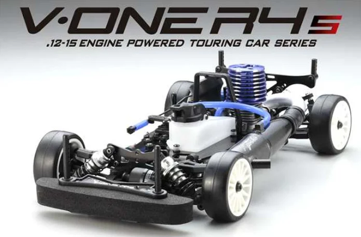

京商 V-One R4s

引用元画像：京商公式サイト
📋 基本情報
| メーカー | 京商（Kyosho） |
|---|---|
| 機種名 | V-One R4s（ラバータイヤ仕様） |
| シャーシ略称 | V-One R4s |
| 型番 | 31267 |
| 発売時期 | 2013年 |
| 価格 | ¥54,780（税込） |
| 生産状況 | 生産終了 |
| カテゴリー | ラジコンカー（1/10スケール GP 4WD） |
| サブカテゴリー | 12-15エンジン ツーリングカー（ピュアテンGP 4WD、ラバータイヤ仕様） |
| シリーズ | V-ONE R4シリーズ ラバータイヤ仕様 |
📏 シャーシスペック
| 全長 | 368mm |
|---|---|
| 全幅 | 200mm |
| 全高 | 105mm |
| ホイールベース | 258mm |
| トレッド | フロント174mm / リヤ170mm |
| タイヤ | KCスリック（M）ラバータイヤ標準装備 |
| ホイール | 15本スポークホイール標準装備（高剛性・高強度） |
| フレーム | ダブルデッキアルミプレートシャーシ（ベルトドライブ4WD） |
| 全備重量 | 約1,700g（エンジン別売） |
⚙️ 駆動系
| 駆動方式 | ベルトドライブ4WD |
|---|---|
| デフギヤ | ギヤデフ（前後） |
| ギヤ比 | 7.18:1 / 5.09:1（2スピードトランスミッション） |
| トランスミッション | 2スピードトランスミッション |
| ドライブシャフト | ドッグボーンドライブシャフト |
| ベアリング | フルベアリング仕様 |
| エンジン | 12-15クラス後方排気エンジン（別売） 側方排気エンジンも搭載可能（GXR-15エンジンなど） |
🔧 サスペンション
| 形式 | 4輪ダブルウィッシュボーン独立懸架 |
|---|---|
| ダンパー | コイルスプリング オイルダンパー×4本 |
| スタビライザー | 標準装備 |
💡 特徴
V-One R4のラバータイヤ仕様
- 世界の頂点を目指せる走りを実現した"V-One R4"にラバータイヤの標準装備と側方排気エンジンの搭載を可能とした"V-One R4s"
- 扱いやすさと様々なレースへの対応力を付加
- 徹底した低重心設計、ドライブトレイン全般での回転マスモーメントの低減等々を実現したシャーシはそのままに、より多くのドライバーに優れた走りを提供
KCスリック（M）ラバータイヤ標準装備
- 全国のレース規定に対応したKCスリック（M）ラバータイヤを標準装備
- レースで高い評価を集めるラバータイヤ
- 優れたグリップ特性を発揮
- 様々な路面で、コントローラブル極まりない操縦性を披露
15本スポークホイール標準装備
- 高い強度を誇る15本スポークホイールを標準装備
- 高剛性で高強度のホイール
- ラバータイヤとの組み合わせで抜群の性能を発揮
側方排気エンジンも装着可能
- 専用のメインシャフトマウントを新設計したことで、側方排気エンジンも装着可能に
- 扱いやすさとハイパワーの両立が人気のGXR-15エンジンも搭載可能に
- 後方排気エンジンだけでなく、側方排気エンジンにも対応
幅広いセッティング対応力
- 高速サーキットからテクニカルコースまで、幅広く対応できるセッティング対応力
- フロントロール調整機能など、細かなセッティングが可能
- レースに生まれ、レースが育んだサラブレッドの走りが、さらなるレースシーンへとあなたを誘う
🔧 ぽすとそに工房での修理実績
修理難易度
★★★★☆（難しい）
パーツ供給が少なく、修理に必要な部品の入手が困難な場合があります。
よくある故障・注意点
- ラバータイヤの磨耗（スポンジタイヤより磨耗が早い）
- オイルダンパーのオイル漏れ（Oリング劣化）
- ドライブベルトの磨耗・破損（定期的な点検が必要）
- ギヤデフのギヤ磨耗（ハイパワーエンジン使用時）
- 側方排気エンジン使用時のメインシャフトマウントの振動
修理のポイント
- ラバータイヤは走行前に必ずタイヤインナーの状態をチェック
- オイルダンパーは定期的にオイル交換とOリング交換を実施
- ドライブベルトの張り具合を定期的にチェック（中央部で5mm程度の押し込み）
- ギヤデフは定期的にシリコンオイルの交換を実施
- 側方排気エンジン使用時はメインシャフトマウントの固定を定期的にチェック
- V-One R4シリーズとの部品互換性が高い
その他の特徴
- 2013年発売のため、現在はパーツ供給が少ない
- V-One R4シリーズとの部品互換性が非常に高い
- ラバータイヤ仕様のため、スポンジタイヤ仕様のV-One R4とはセッティングが異なる
- 全国のレース規定に対応したラバータイヤ標準装備